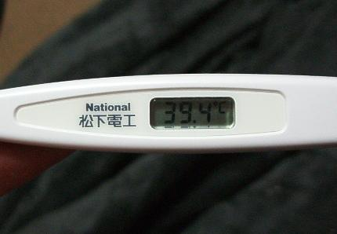

日々、想ふ
〜過去感じたことがつれづれと〜
（できるだけ最大化してお読みください）
日々、想ふ
三行日記。１０/１５
「ピアノの森」がおもしろいです、タケユキです。
朝起きて今日はのんびりテレビ見ながら勉強。
明日はちょっとした試験があるんでとりあえずがんばってこようかと思います。
今日の晩ご飯：賞味期限切れの豚マン。
期待を裏切る。１０/１４
今日は深夜一時過ぎに友達がいきなりピンポンしてきたので
日記の更新はおやすみかと見せかけて更新しますよ。
今日の目標はいい意味か悪い意味かは分からんけども
人の期待を裏切る男になるです、タケユキです。
いきなりの訪問者はこの夏ペルーに行った男でした。
それから酒飲んでるから・・
やっぱり日記これまで。
今日の夜：朝が明けるまで語ってるような。
バイト帰りに。１０/１３
大学っていうのは地方から出てきて一人暮らしをしている人が多く
大学周りではキャンパス外でも知り合いに会うことが多いです。
普通に友達だったり、バイトのつながりの人だったり、
顔見知り程度の人や友達with彼女とか。
彼女が知ってる人とかだったらともかく
見たことがあるだけで話したことない人とかだと
友達に話しかけるかどうか迷います。
ましてやニッショー(広島でいうショージ)の惣菜コーナーとかで
出くわすと無性に気まずかったりする、お互い買い物カゴ持ってるし。
てなわけで最初に見かけて話しかけにいこうか
それともそっとしとこうか迷いながらも遠巻きに
ニヤニヤしてた今日夜１０時過ぎにニッショーにいた男は俺ですよ、タケユキです。
今日も朝８時過ぎに起床するも二度寝すると次起きたのは１２時半。
ビビってジャージのまま学校行って授業受けてる俺がいました。
この眠たい病はどうにかならんものか。
とりあえず朝８時起床は習慣にしようとがんばってはいこうと思います。
今日の一言：結局そのことには触れずに書きました。
うむ。。。１０/１２
今日はカープの野村選手の引退試合でしたね。
１６年間お疲れ様です、タケユキです。
今日から規則正しい生活をしようと１限に授業はないけど
８時半に起きてみました。超さわやか。
それでお昼は空港の公園のところへお昼ご飯を持ってひなたぼっこへ。
今日は暖かい一日最後の日とかいう噂(明日以降秋らしく冷え込むとか)みたいで
たまにはこういう一日もいいなと、
有意義に一日を過ごせそうだなと午後帰宅。
その後、昼寝。起きたら夜。
早起きした意味ねえ。
今日の一言：生ハム大好き。
日本のシンドラーのように。１０/１１
「渡航目的はなんですか？」
「・・生きるため」
今月最大の感動は杉原千畝です、
もともとおおまかな話は知ってたけどドラマで見ると
感動はまたひとしおってやつですよね、タケユキです。
とりあえずこれを期にまっとうな人間になろうと、
決意を新たにした男がここにいます。
とりあえず当面の目標は規則正しい生活を送ること、
毎日８時には起きようと思います。
・・立派な人間にはまだまだ程遠いって感じですか。
今日の晩ご飯：カレーコーンスープ。
大掃除。１０/１０
友達に部屋を掃除しろやこのボケって言われました、タケユキです。
同じマンション(俺の真下の部屋)に住んでる友達なんですが
彼の部屋にゴキブリやらクモやらが出るのは
俺の部屋が汚くてそれにつられて虫どもが湧いてでるからなんだとか違うとか。
確かに俺の部屋はちらかってはいますが
俺の部屋でゴキブリを見たことは１度もありません、
クモならちっさいやつを何回か見たことあるけど。
あげくの果てに彼はこういいました、
「虫を見るとキャアキャア怖がるようなかわいい女の子が
真下に住んでると思って大掃除をしてみたらどうよ？」
俺が掃除をする前にとりあえずお前がかわいい女の子になってみろや、
そう思ってみたけどもし真下に虫が苦手な女の子が住んでたとしたら、
女の子の部屋に虫が出る
↓
悲鳴を聞き俺が助けに行く
↓
さっと俺が虫退治
↓
「・・タケユキ君かっこいい」
↓
こんな季節に春到来。
いつかわいい子がきてもいいようにもう少し部屋汚くしとこうか。
今日の大掃除：というわけで中止。
御堂筋パレード。１０/９
今日は御堂筋パレードあったみたいですね、タケユキです。
うん、それだけ。
書くことある気もするんだけど、
今日の発見：あ、おもろい
フラッシュ見つけた。
今日は。１０/８
タンバリンを数年ぶりに使った、タケユキです。
思ってたよりおもしろいもんなのね、タンバリン。
けっこう音でかいのね、タンバリン。
しかも予想以上に硬いのね、タンバリン。
叩きすぎて赤くはれてるのは、俺の腕。
明日もバイトなのに。
今日のお風呂：朝５時から入ります。
ふぅ。１０/７
昨日のなぞなぞの答えが知りたい人は
足跡掲示板を見てください簡単に書いてあります、タケユキです。
今日は学校行ってバイト行って帰ってきて午前１時過ぎ。
明日は２時半からバイトらしいので寝て起きてまた出発の空気です。
誰か俺とデートして。本気で。
今日のバイト：いやなお客さんいた。
消えた１ドル。１０/６
えー、業務連絡です。
高校の時のクラスのヒロインこと綾ちゃんがケータイをなくしたそうです。
それで高校の友達の連絡先が全滅して困ってるそうで、
新しい連絡先を知りたい人は俺に言ってくれたら教えますんで
下のメールフォームとか俺のケータイに連絡ください。
高校時代に綾ちゃんを姉御と崇拝してた人、
陰では偉そうに「綾ちゃん」って言ってたのに
本人の目の前では恥ずかしがって苗字で呼んでた黒い人とかは、
俺に連絡くれたらいいと思います。
久しぶりにメールでもしてみようかなとか思う人も連絡ください、タケユキです。
３人の男がホテルに泊まることになりました。
ホテルの主人が一泊３０ドルの部屋が空いていると言ったので
３人は１０ドルずつ払って一晩泊まりました。
次の朝、ホテルの主人は部屋代は本当は２５ドルだったことに気が付いて、
余計に請求してしまった分を返すようにと、ボーイに５ドル渡しました。
ところがこのボーイは「５ドルでは３人で割りきれない」と考え、
ちゃっかり２ドルを自分のふところに入れ、３人の客に１ドルずつ返しました。
さて、３人の男は結局部屋代を９ドルずつ出した事になり、計２７ドル。
それにボーイがくすねた２ドルを足すと２９ドル。
残りの１ドルはどこへ？
今日の謎：なんというか、ね。
トイレが近いです。１０/５
今日をオフの日にしようかどうか迷う、タケユキです。
午後からアメ村・堀江に買い物に行って来ました。
雨降ってたから久しぶりに電車で。
特にこれを買おうってのを決めずに行ったから
大きい買い物をすることなく
ちょっと買い物したくらいで帰宅しました。
そろそろ風邪も治ってきて全快に近い感じです。
あとはお腹の調子だけ、でもそれが問題。
今日の夜：いらない服大量処分。
ビデオも録れ。１０/４
２１：００から１０ｃｈを見とけ、タケユキです。
*********************************************
いや〜、おもろいね「ガキの使い笑ってはいけないスペシャル」。
これシリーズ第３弾だったんだけどなかなかのもん。
ビデオ録ったから今からもっかい見よ。
今日の授業：座って聞いてるだけ。
とりあえず。１０/３
峠を越しました、タケユキです。
まだおなかの調子が万全とは言いがたいですが
明日から授業開始なので生き抜こうと思います。
今日の日記：まだ体調は万全ではないから短め。
季節の変わり目。１０/１・２

これで察して。